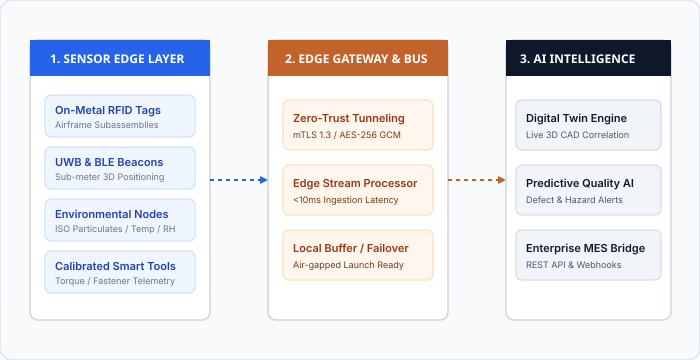

Aerospace AIoT Sensing Technologies
High-integrity, industrial-grade connectivity protocols and ruggedized hardware nodes designed to overcome metallic multi-path interference in flight vehicle assembly bays.
AeroMFG AI deploys a hybrid multi-sensor mesh combining Ultra-Wideband (UWB) precision positioning, low-power BLE 5.3 proximity beacons, specialized on-metal UHF RFID tags, and continuous cleanroom micro-climate telemetry.

Mission-Critical Hardware Nodes
Engineered for outgassing compliance, extreme vibration tolerance, and micro-watt power consumption.
Ultra-Wideband (UWB) 3D Positioning
Delivers sub-meter real-time spatial positioning (±14 cm precision) within multi-acre metallic assembly hangars where GPS and traditional RF fail.
- Operates in 3.5 GHz – 6.5 GHz IEEE 802.15.4z aerospace bands.
- Time-Difference-of-Arrival (TDoA) algorithms immune to metallic multipath reflection.
- 5-year battery life in active subassembly tracking modes.
Specialized On-Metal UHF RFID
Engineered specifically for aerospace composite layups, titanium engine mounts, and airframe spars without signal detuning or mechanical degradation.
- EPC Gen2 / ISO 18000-6C compliant with anti-collision protocols.
- Withstands autoclave composite cure cycles up to 230°C and 7 bar pressure.
- Direct laser-etched 2D matrix fallback for optical verification.
Cleanroom Environmental Nodes
Continuous monitoring of airborne particulate density, ambient temperature, barometric pressure, and relative humidity inside ISO Class 5–8 cleanrooms.
- Real-time optical particle counters (0.3µm, 0.5µm, and 5.0µm).
- ASTM E595 outgassing compliance (<1.0% CVCM).
- Direct interface with cleanroom HVAC BMS and alarm dampers.
Calibrated Smart Tool Telemetry
Wireless integration with torque wrenches, rivet guns, and fastener measurement instruments to verify exact engineering specifications during payload integration.
- Automatic lock-out when tools are outside calibration certificate dates.
- Live recording of applied torque and angle directly to the digital birth record.
- FOD prevention via autonomous tool check-out/check-in verification.